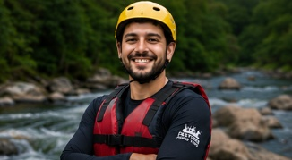

Nossa missão é proporcionar aventuras emocionantes, seguras e inesquecíveis. Buscamos conectar pessoas à natureza por meio de experiências únicas de rafting e aventura.


Nossa missão é proporcionar aventuras emocionantes, seguras e inesquecíveis. Buscamos conectar pessoas à natureza por meio de experiências únicas de rafting e aventura.
A Rafting Águas Vivas nasceu da paixão pelos esportes de aventura e pelo desejo de compartilhar momentos emocionantes em rios e corredeiras. Nossa equipe trabalha para unir diversão, segurança e natureza em cada experiência.

